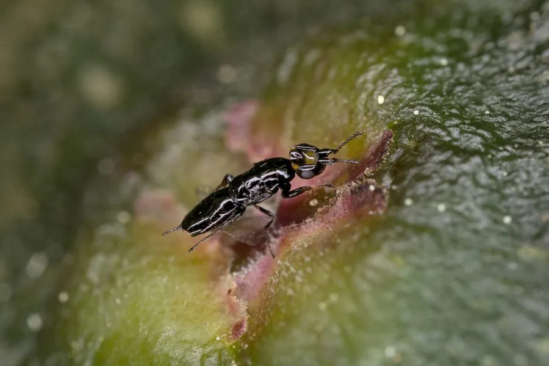

昆虫 · 动物界
无花果小蜂 Blastophaga psenes

与无花果互利共生的微小榕小蜂，在果实内部完成授粉和繁殖，雌蜂钻入果腔产卵，是共生演化的经典例子。
- 分类
- 门节肢动物门纲昆虫纲目膜翅目科榕小蜂科属榕小蜂属
- 栖息环境
- 无花果的隐头花序内部，以及栽培无花果的果园
- 地理分布
- 原产地中海沿岸和西亚，随无花果栽培扩散至全球多地
- 保护级别
- 暂无评估
物种志
无花果小蜂成虫体长仅 1–2 mm，体形微小。它的体色为黑褐色，雌蜂有翅，能够飞行；雄蜂无翅，终生生活在无花果内部；雌蜂头部扁平，上颚发达，便于钻入无花果顶端的通道。
无花果小蜂分布于地中海沿岸和西亚，随着无花果栽培扩散到全球多地。它的整个生活史几乎都在无花果内部完成：雌蜂带着花粉钻入无花果的隐头花序，在内部产卵，同时给雌花授粉；幼虫在果内取食和发育，雄蜂先羽化并与雌蜂交配，雌蜂随后携带花粉飞出，寻找新的无花果。无花果为小蜂提供繁殖场所和食物，小蜂为无花果传粉，是专性互利共生的经典例子。人工栽培某些无花果品种时需引入这种小蜂才能结果。
形态与习性
- 食性幼虫在无花果内取食，成虫以花蜜和花粉为食
- 体长成虫仅 1–2 mm
- 性二型雌蜂有翅能飞，雄蜂无翅
- 共生为无花果传粉，无花果为其提供繁殖场所
- 繁殖雌蜂钻入果腔产卵，幼虫在果内发育
- 价值是互利共生和协同进化的经典研究材料
趣味知识
- 无花果小蜂体长只有 1–2 毫米，肉眼几乎看不清。
- 雌蜂钻入无花果内部产卵，同时为雌花授粉。
- 雄蜂没有翅膀，终生生活在无花果内部。
- 无花果与小蜂是专性互利共生的经典例子。